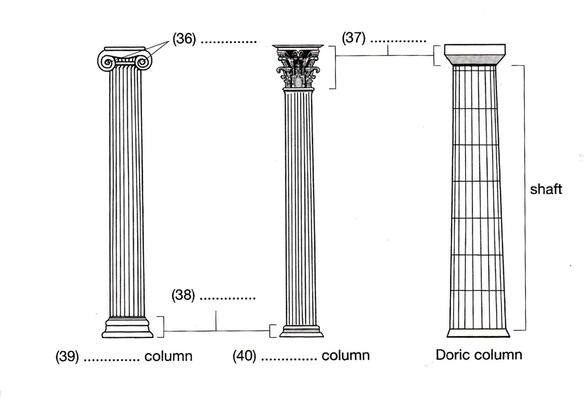

<!-- 원본: ACADEMIC3/reading (레거시 서버에서 2026-11-14 수집, 정답 제거) -->
<div class="legacy-content"><div id="pageContainer">
<div class="page" id="page-0">
<div class="flex flex-col md:flex-row gap-6">
<div class="w-full md:w-1/2 max-h-[600px] overflow-y-auto">
<h3 class="text-xl font-semibold text-purple-800 mb-4">You should spend about 20 minutes
                                    on <b>Questions 1 - 15,</b> which are based on
                                    Reading
                                    Passage 1 below.
                                </h3>
<p class="text-gray-700 leading-relaxed">
</p><div style="width:800px; border:1px solid #bbb; padding:20px;">
<p style="font-size:16px;;">
</p><center>Biology of Light</center>
<br/>
<p><b>A</b> The phenomena of light has always been pondered and mythologized
                                        about, but only until recently has there been systematic efforts to determine
                                        its basic basic properties and nature. A whole host of cultures have their own
                                        take
                                        on
                                        the origin of light or the day/night cycle. Some stories see the light and dark
                                        duality as a great cosmic struggle. In the Norse mythology of
                                        Scandinavia,
                                        wolves chase both the moon and sun as they arch across the sky. Scientific
                                        inquiry into light is yet another expression of our natural curiosity about the
                                        world. In the West, there have been postulations about light since the time of
                                        Ancient Greece. This line of questioning sometimes has led to practical
                                        applications as well, allowing us to harness the properties of different kinds
                                        of light for the benefit of all.</p>
<div style="height:10px"></div>
<p><b>B</b> The Greek hills and islands produced many naturalists and
                                        mathematicians in ancient times. Several inquired about the nature of light.
                                        Euclid, famous for his work in geometry, theorized that light traveled in
                                        straight lines and studied the laws of reflection. Another different theorist
                                        prefigured the wave/particle debate over the nature of light by stating that it
                                        was made up of atoms that moved at infinite speed. The biggest advance in the
                                        nature of light during this time, though, was from an Islamic scientist named
                                        Al-Haitham. He theorized that our vision was a result of light entering our
                                        eyes. Al-Haitham believed this light to be very, very fast but ultimately finite
                                        in speed. He also guessed correctly that the refraction effect was a result of
                                        light traveling at different speeds through different mediums. The camera
                                        obscura, or pinhole camera, that he invented would later help others understand
                                        human sight. Further advances into the biology of light would not be made for
                                        about 600 years, or until the beginning of the 17th century.</p>
<div style="height:10px"></div>
<p><b>C</b> Johannes Kepler was a great astronomer whose work was part of the
                                        revolution, in the Western world, from ancient ways of looking at nature to a
                                        more systematic and scientific way. Kepler’s work led to a greater understanding
                                        of the orbits of planets and laid the foundations for modern astronomy. He also
                                        studied the phenomena of light and made important formulations of it. The
                                        inverse square law was formulated by Kepler, which states that the intensity of
                                        light goes down proportionately by the square of the distance away from the
                                        source. For example, if the distance from an object to a light source is
                                        doubled, the intensity of the light reaching the object is reduced to one-fourth
                                        of the previous intensity. If the distance is tripled, the intensity is reduced
                                        to one-ninth of the previous intensity, or three squared, and so forth. Kepler
                                        also theorized that the image of the world we receive onto our eyes is actually
                                        upside-down due to the light entering the eye, much like in the camera obscura
                                        invented by Al-Haitham. Oddly, Kepler did not expound upon the laws of
                                        refraction, and he also incorrectly assumed the speed of light to be infinite.
                                    </p>
<div style="height:10px"></div>
<p><b>D</b> Over the next centuries various other scientific greats added to
                                        our understanding of light. Isaac Newton’s Opticks was a seminal work in color
                                        and refraction. During his time, there was a debate over whether or not light
                                        was actually a particle or a wave. The true nature of light turned out to be
                                        more complicated, actually having properties of both, but at that time it was
                                        thought Newton made a mistake by pushing a particle theory of light.
                                    </p>
<div style="height:10px"></div>
<p><b>E</b> The work of two more scientists, Michael Faraday and James Clerk
                                        Maxwell, created the modern understanding of light. Faraday’s experiments, data,
                                        and incipient theory on light allowed Maxwell to formulate a complete
                                        mathematical understanding of light in relation to electricity and magnetism. By
                                        realizing and explaining how these forces were unified, modern physicists could
                                        delve into the more counterintuitive and interesting properties of light.
                                        However, even Maxwell’s theories needed improvement since he assumed that all
                                        electromagnetic waves, including light, propagated through a substance that
                                        permeated all space. Since sound had to travel in a medium such as air or water,
                                        it was thought light needed such one as well. Later experiments disproved the
                                        notion of a “luminous aether” as well as refining the measurements for the speed
                                        of light.
                                    </p>
<div style="height:10px"></div>
<p><b>F</b> The leap from a classical view of light to a quantum view of light
                                        took place in the 20th century. Albert Einstein was responsible for two
                                        discoveries, which fundamentally altered the way the light was perceived. The
                                        first discovery, and the one for which he received a Nobel prize in physics, was
                                        his explanation of the photoelectric effect. Einstein noticed that if a certain
                                        type of light were shined onto a piece of reactive metal, it would emit
                                        electrons. If another type of light with a lower frequency, and therefore less
                                        energy, were used instead, the metal would not emit any electrons, regardless of
                                        the amount of that lower frequency light. Einstein used the earlier work of Max
                                        Planck to show how this particle-like behavior of light showed that its energy
                                        wasn’t continuous, but rather, came in “quanta”. Light could only exist at
                                        certain energy levels and nowhere in between. Einstein also used Maxwell’s
                                        equations to develop his Special Theory of Relativity. Among many things, this
                                        theory states that light is a sort of universal speed limit and that nothing can
                                        travel faster than it.
                                    </p>
<div style="height:10px"></div>
<p><b>G</b> Scientists today are continuing to try and understand properties of
                                        light. Useful technologies, such as fiber optics and laser communications, have
                                        already been developed. Future work may even give us computers that make
                                        calculations using photons instead of electrons. The long search for the deeper
                                        meaning of something around us all the time has been most useful and beneficial.
                                    </p>
</div>
</div>
<div class="w-full md:w-1/2 max-h-[600px] overflow-y-auto">
<div class="question mb-6">
<div>
<h2 style="font-size:24px;"><b>SECTION 1 QUESTIONS 1-13</b></h2>
<h2 style="font-size:20px;"><b>Questions 1-8</b></h2>
</div>
<br/>
<div>
<div style="width:700px; border:1px solid #000; padding:10px;">
<p>Complete the
                                                summary below. Choose your answers from the box at the bottom of
                                                the page and write them in boxes 1-8 on your answer sheet.</p>
<p><b>NB</b> There are more words than spaces so you will not use them
                                                all.<br/>
                                                You may use any of the words more than once.</p>
</div>
<div style="height:10px;"></div>
<center><b>OUR KNOWLEDGE OF LIGHT</b></center>
<br/>
                                        In the past, our knowledge of light came from (Example).
                                            Answer: myth<br/>
<div style="height:10px;"></div>
<div style="border:1px solid #000; padding:10px; width:700px;">
                                            In the Western World, there have been investigations into the <input autocomplete="off" class="border border-purple-300 rounded px-3 py-2 w-full bg-white text-gray-800" name="q1" placeholder="(1)" style="width:150px; border:0; border-bottom:1px solid #000; text-align:center;" type="text"/>
                                            of
                                            light since the time of the Ancient <input autocomplete="off" class="border border-purple-300 rounded px-3 py-2 w-full bg-white text-gray-800" name="q2" placeholder="(2)" style="width:150px; border:0; border-bottom:1px solid #000; text-align:center;" type="text"/>
                                            They laid some of the
                                            foundations for <input autocomplete="off" class="border border-purple-300 rounded px-3 py-2 w-full bg-white text-gray-800" name="q3" placeholder="(3)" style="width:150px; border:0; border-bottom:1px solid #000; text-align:center;" type="text"/>
                                            inquiry into light. People either <input autocomplete="off" class="border border-purple-300 rounded px-3 py-2 w-full bg-white text-gray-800" name="q4" placeholder="(4)" style="width:150px; border:0; border-bottom:1px solid #000; text-align:center;" type="text"/>
                                            on
                                            what light was, or tried to describe very broad mathematical properties of
                                            it.
                                            After the <input autocomplete="off" class="border border-purple-300 rounded px-3 py-2 w-full bg-white text-gray-800" name="q5" placeholder="(5)" style="width:150px; border:0; border-bottom:1px solid #000; text-align:center;" type="text"/>
                                            Revolution in Europe, some <input autocomplete="off" class="border border-purple-300 rounded px-3 py-2 w-full bg-white text-gray-800" name="q6" placeholder="(6)" style="width:150px; border:0; border-bottom:1px solid #000; text-align:center;" type="text"/>
                                            delved deeper and
                                            deeper into the intrinsic nature of light, including what it was made of,
                                            how it acted, and how fast it went. Recent <input autocomplete="off" class="border border-purple-300 rounded px-3 py-2 w-full bg-white text-gray-800" name="q7" placeholder="(7)" style="width:150px; border:0; border-bottom:1px solid #000; text-align:center;" type="text"/>
                                            about light include
                                            some <input autocomplete="off" class="border border-purple-300 rounded px-3 py-2 w-full bg-white text-gray-800" name="q8" placeholder="(8)" style="width:150px; border:0; border-bottom:1px solid #000; text-align:center;" type="text"/>
                                            and unintuitive findings.
                                        </div>
<div style="border:1px solid #000; padding:10px; width:700px;">
<center><b>Word List</b></center><br/>
<div style="width:690px; display:flex; justify-content: left;">
<div style="width:220px;">
                                                    religious<br/>
                                                    future<br/>
                                                    outcomes<br/>
                                                    beneficial<br/>
                                                    nature<br/>
                                                    adventurers<br/>
                                                    scientific<br/>
</div>
<div style="width:220px;">
                                                    past<br/>
                                                    Nobel<br/>
                                                    discoveries<br/>
                                                    Scandinavians<br/>
                                                    pragmatic<br/>
                                                    unexpected<br/>
                                                    scientists<br/>
</div>
<div style="width:220px;">
                                                    speculated<br/>
                                                    created<br/>
                                                    unknowable<br/>
                                                    undesirable<br/>
                                                    nurture<br/>
                                                    Greeks<br/>
</div>
</div>
</div>
</div>
</div>
<div class="question mb-6">
<div>
<h2 style="font-size:20px;"><b>Questions 9-15</b></h2>
<div style="height:10px;"></div>
<p>Look at the following notes that have been made about the matches described
                                            in Reading Passage 1. Decide which type of Match <b>(A–H)</b> corresponds
                                            with each
                                            description and write your answers for questions 9-15.</p>
</div>
<br/>
<div style="width:700px;">
<center><b>Choice of Matches</b></center><br/>
<b>A</b>  Johannes Kepler<br/>
<b>B</b>  Max Planck<br/>
<b>C</b>  Isaac Newton<br/>
<b>D</b>  Al-Haitham<br/>
<b>E</b>  Albert Einstein<br/>
<b>F</b>  Michael Faraday<br/>
<b>G</b>  Euclid<br/>
<b>H</b>  James Clerk Maxwell
                                    </div>
<br/>
                                    wrote seminal work in color and refraction (Example).
                                        Answer: C
                                    <br/>
<div>
<b>9</b>  was the first to theorize that vision was light entering our
                                        eyes.  <input autocomplete="off" class="border border-purple-300 rounded px-3 py-2 w-full bg-white text-gray-800" name="q9" placeholder="(9)" style="width:150px; border:0; border-bottom:1px solid #000; text-align:center;" type="text"/><br/>
<b>10</b>  formulated how nothing in the universe could exceed the speed of
                                        light.  <input autocomplete="off" class="border border-purple-300 rounded px-3 py-2 w-full bg-white text-gray-800" name="q10" placeholder="(10)" style="width:150px; border:0; border-bottom:1px solid #000; text-align:center;" type="text"/><br/>
<b>11</b>  used a previous person’s work to determine light’s relationship
                                        with
                                        electromagnetism.  <input autocomplete="off" class="border border-purple-300 rounded px-3 py-2 w-full bg-white text-gray-800" name="q11" placeholder="(11)" style="width:150px; border:0; border-bottom:1px solid #000; text-align:center;" type="text"/><br/>
<b>12</b>  invented a special device that helped to understand our
                                        vision.  <input autocomplete="off" class="border border-purple-300 rounded px-3 py-2 w-full bg-white text-gray-800" name="q12" placeholder="(12)" style="width:150px; border:0; border-bottom:1px solid #000; text-align:center;" type="text"/><br/>
<b>13</b>  discovered properties about the strength of light as it leaves a
                                        source.  <input autocomplete="off" class="border border-purple-300 rounded px-3 py-2 w-full bg-white text-gray-800" name="q13" placeholder="(13)" style="width:150px; border:0; border-bottom:1px solid #000; text-align:center;" type="text"/><br/>
<b>14</b>  his work was used to determine how the energy in light is
                                        discrete.  <input autocomplete="off" class="border border-purple-300 rounded px-3 py-2 w-full bg-white text-gray-800" name="q14" placeholder="(14)" style="width:150px; border:0; border-bottom:1px solid #000; text-align:center;" type="text"/><br/>
<b>15</b>  early theorist who studied the reflection of
                                        light.  <input autocomplete="off" class="border border-purple-300 rounded px-3 py-2 w-full bg-white text-gray-800" name="q15" placeholder="(15)" style="width:150px; border:0; border-bottom:1px solid #000; text-align:center;" type="text"/><br/>
</div>
</div>
</div>
</div>
</div>
<div class="page" id="page-1">
<div class="flex flex-col md:flex-row gap-6">
<div class="w-full md:w-1/2 max-h-[600px] overflow-y-auto">
<h3 class="text-xl font-semibold text-purple-800 mb-4">You should spend
                                    about 20 minutes on Questions <b>16-26</b> which are based on this passage 2.
                                </h3>
<p class="text-gray-700 leading-relaxed">
</p><div style="width:800px; border:1px solid #bbb; padding:20px;">
<div>
<center><b>Australia Invaded from Abroad</b></center><br/>
<div style="height:10px"></div>
<p>
<b>A</b> The interconnectedness of the global economy has brought
                                            many
                                            benefits to Australia. Transportation connections to the rest of the world
                                            allOw for the export of natural resources. These links to the outside world
                                            also bring in other goods as well as people, both immigrants needed for the
                                            labor force and tourists. If not for these developments, Australia
                                            would not
                                            be the prosperous society it is. However, other plant and animal species can
                                            also accompany these movements. Most of them do not pose a threat to the
                                            indigenous wildlife, but sometimes they proliferate, harming the existing
                                            ecosystem of Australia. Since the Australian economy is dependent on trade
                                            with the rest of the world, government, corporations, and individuals must
                                            minimize the introduction of species that threaten the environment and
                                            effectively manage those invasive ones already present.
                                        </p>
<div style="height:10px"></div>
<p>
<b>B</b> The indigenous flora and fauna of Australia exhibit some
                                            unique characteristics among life on Earth. Animals such as the kangaroo,
                                            koala, and platypus are known throughout the world. Most of the world’s
                                            marsupial species are found there. The most notable features of larger
                                            marsupials are special pouches in the mother animals where the young suckle.
                                            They are born only after a few weeks and the embryo-like baby must crawl
                                            unaided into the pouch and attach itself to the teat for sustenance. This
                                            method of birth offers an advantage over placental mammals, like humans, in
                                            that the mother is not at great risk from giving birth. The exit of the
                                            embryo from the mother is not traumatic and if there is any scarcity while
                                            the embryo is still attached to the teat, the young animal dies and the
                                            mother produces another one. Australia is also where nearly all monotremes
                                            exist. Monotremes, like the platypus and echidna, are similar to other
                                            mammals in that they have hair and produce milk for their young, but they
                                            lay eggs instead of giving birth to live babies.
                                        </p>
<div style="height:10px"></div>
<p>
<b>C</b> According to the Australian Department of Foreign Affairs and
                                            Trade, nearly 80 percent of the continent’s indigenous animals and flowering
                                            plants are unique to it, meaning they are found nowhere else in the world.
                                            The geologic history of plate tectonics explains how this came to be. About
                                            250 million years ago, there existed a supercontinent called Pangaea whose
                                            southeastern portion was composed of what is now Australia. This southern
                                            part of Pangaea started to break apart and by about 35 million years ago,
                                            Australia separated from what is now Antarctica. Unlike the other parts of
                                            the old supercontinent, Australia remains separate from other major
                                            landmasses and also has a climate where its unique animal and plant species
                                            can survive.
                                        </p>
<div style="height:10px"></div>
<p>
<b>D</b> Unfortunately, with the arrival of non-native visitors from
                                            Europe, many invasive species were introduced. The first of these vectors
                                            were sailing ships with animals stowed away in their holds, as well as
                                            settlers and colonists who brought their own animals and plants with them.
                                            The environment of Australia makes it the direst inhabited continent on
                                            Earth, so the arrival of non-indigenous species makes it hard for other
                                            animals and plants to survive. In modern times container ships, airplanes,
                                            and people desiring exotic plants or pets have been other vectors for the
                                            introduction of new species. Sometimes, in order to control a weed or pest
                                            animal, authorities have deliberately propagated a non-indigenous species
                                            with disastrous results. The current cane toad infestation in Australia is a
                                            result of poor planning in trying to control a type of beetle. The cane toad
                                            shunned eating that particular insect pest and, instead, has wreaked
                                            enormous havoc on other indigenous species.
                                        </p>
<div style="height:10px"></div>
<p>
<b>E</b> The government has implemented a variety of controls to combat
                                            invasive animals. Any method, though, has limits given the scale of the
                                            problem and the variety of limiting factors involved. The red fox is
                                            controlled through government bounties, poisoning, and fencing. Shooting
                                            animals from helicopters is another method that is more practical for larger
                                            animals that congregate in herds, like feral goats and camels. An early
                                            attempt at invasive species control in the 1950’s used a virus that affected
                                            only wild rabbits. It was a mostly successful effort, killing over 90% of
                                            them, according to the Australian Department of Environment and Water
                                            Resources. Unfortunately, they are still present throughout most of the
                                            country, albeit in greatly reduced numbers, since some rabbits developed a
                                            resistance to the virus. Another method with potential is the use of sterile
                                            animals released into the wild to disrupt a species’ reproductive cycle.
                                        </p>
<div style="height:10px"></div>
<p>
<b>F</b> Some of these methods are controversial because of their
                                            possible impact on indigenous species and questions about their humaneness.
                                            There is no question about the economic impact of invasive species, though;
                                            weed plant management alone costs Australia about AUD$4 billion a year. The
                                            proliferation of destructive species affects industries like agriculture,
                                            forestry, and tourism. Through careful regulation and environmental
                                            stewardship, Australians can mitigate the impact of these unwelcome plants
                                            and animals.
                                        </p>
</div>
</div>
</div>
<div class="w-full md:w-1/2 max-h-[600px] overflow-y-auto">
<div class="question mb-6">
<div>
<h2 style="font-size:20px;"><b>Questions 16–22</b></h2>
<p>Do the following statements agree with the views of the writer in Reading
                                            Passage 2?
                                            In boxes 16-22 write:</p>
</div>
<br/>
<div>
<b>YES</b>   if the statement agrees with the writer<br/>
<b>NO</b>   if the statement contradicts the writer<br/>
<b>NOT GIVEN</b>   if it is impossible to say what the writer thinks
                                        about this
                                    </div>
<br/>
                                    Most invasive species in Australia come from North America. (Example).
                                       Answer: NOT GIVEN
                                    <br/>
<div>
<b>16</b> Globalization is one factor that causes invasive species to be
                                        introduced
                                        into Australia.<br/>
<div class="space-y-2 ml-6">
<label><input autocomplete="off" class="mr-2 w-4 h-4 accent-purple-600" name="q16" type="radio" value="YES"/><b>YES</b></label>   
                                            <label><input autocomplete="off" class="mr-2 w-4 h-4 accent-purple-600" name="q16" type="radio" value="NO"/><b>NO</b></label>   
                                            <label><input autocomplete="off" class="mr-2 w-4 h-4 accent-purple-600" name="q16" type="radio" value="NOT GIVEN"/><b>NOT GIVEN</b></label>
</div>
<br/>
<b>17</b> The majority of marsupial species is found outside of Australia.<br/>
<div class="space-y-2 ml-6">
<label><input autocomplete="off" class="mr-2 w-4 h-4 accent-purple-600" name="q17" type="radio" value="YES"/><b>YES</b></label>   
                                            <label><input autocomplete="off" class="mr-2 w-4 h-4 accent-purple-600" name="q17" type="radio" value="NO"/><b>NO</b></label>   
                                            <label><input autocomplete="off" class="mr-2 w-4 h-4 accent-purple-600" name="q17" type="radio" value="NOT GIVEN"/><b>NOT GIVEN</b></label>
</div>
<br/>
<b>18</b> New Zealand shares some plants and animals with Australia.<br/>
<div class="space-y-2 ml-6">
<label><input autocomplete="off" class="mr-2 w-4 h-4 accent-purple-600" name="q18" type="radio" value="YES"/><b>YES</b></label>   
                                            <label><input autocomplete="off" class="mr-2 w-4 h-4 accent-purple-600" name="q18" type="radio" value="NO"/><b>NO</b></label>   
                                            <label><input autocomplete="off" class="mr-2 w-4 h-4 accent-purple-600" name="q18" type="radio" value="NOT GIVEN"/><b>NOT GIVEN</b></label>
</div>
<br/>
<b>19</b> The introduction of invasive species into Australia is always
                                        accidental.<br/>
<div class="space-y-2 ml-6">
<label><input autocomplete="off" class="mr-2 w-4 h-4 accent-purple-600" name="q19" type="radio" value="YES"/><b>YES</b></label>   
                                            <label><input autocomplete="off" class="mr-2 w-4 h-4 accent-purple-600" name="q19" type="radio" value="NO"/><b>NO</b></label>   
                                            <label><input autocomplete="off" class="mr-2 w-4 h-4 accent-purple-600" name="q19" type="radio" value="NOT GIVEN"/><b>NOT GIVEN</b></label>
</div>
<br/>
<b>20</b> The Department of Environment and Water Resources reports that wild
                                        rabbits
                                        were effectively eradicated in Australia.<br/>
<div class="space-y-2 ml-6">
<label><input autocomplete="off" class="mr-2 w-4 h-4 accent-purple-600" name="q20" type="radio" value="YES"/><b>YES</b></label>   
                                            <label><input autocomplete="off" class="mr-2 w-4 h-4 accent-purple-600" name="q20" type="radio" value="NO"/><b>NO</b></label>   
                                            <label><input autocomplete="off" class="mr-2 w-4 h-4 accent-purple-600" name="q20" type="radio" value="NOT GIVEN"/><b>NOT GIVEN</b></label>
</div>
<br/>
<b>21</b> Releasing sterile members of an invasive species into the wild has
                                        been shown
                                        to be an effective way to control them.<br/>
<div class="space-y-2 ml-6">
<label><input autocomplete="off" class="mr-2 w-4 h-4 accent-purple-600" name="q21" type="radio" value="YES"/><b>YES</b></label>   
                                            <label><input autocomplete="off" class="mr-2 w-4 h-4 accent-purple-600" name="q21" type="radio" value="NO"/><b>NO</b></label>   
                                            <label><input autocomplete="off" class="mr-2 w-4 h-4 accent-purple-600" name="q21" type="radio" value="NOT GIVEN"/><b>NOT GIVEN</b></label>
</div>
<br/>
<b>22</b> Australia can reduce the effect of invasive species through careful
                                        policy.<br/>
<div class="space-y-2 ml-6">
<label><input autocomplete="off" class="mr-2 w-4 h-4 accent-purple-600" name="q22" type="radio" value="YES"/><b>YES</b></label>   
                                            <label><input autocomplete="off" class="mr-2 w-4 h-4 accent-purple-600" name="q22" type="radio" value="NO"/><b>NO</b></label>   
                                            <label><input autocomplete="off" class="mr-2 w-4 h-4 accent-purple-600" name="q22" type="radio" value="NOT GIVEN"/><b>NOT GIVEN</b></label>
</div>
<br/>
</div>
</div>
<div class="question mb-6">
<b>Questions 23-25</b><br/>
                                    Choose the appropriate letters A-D and write them in boxes 23-25 on your answer
                                    sheet.
                                    2?<br/>
<div style="height:10px;"></div>
<div>
<b id="question-23">23</b> What reason do people have to settle in Australia
                                        and, thus, potentially bring invasive species?<br/>
<div class="space-y-2 ml-6">
<label><input autocomplete="off" class="mr-2 w-4 h-4 accent-purple-600" name="q23" type="radio" value="A"/><b>A</b> to encourage
                                                the extinction of indigenous animals.</label><br/>
<label><input autocomplete="off" class="mr-2 w-4 h-4 accent-purple-600" name="q23" type="radio" value="B"/><b>B</b> to prevent
                                                globalization from taking place.</label><br/>
<label><input autocomplete="off" class="mr-2 w-4 h-4 accent-purple-600" name="q23" type="radio" value="C"/><b>C</b> to contribute
                                                to the economy of Australia.</label><br/>
<label><input autocomplete="off" class="mr-2 w-4 h-4 accent-purple-600" name="q23" type="radio" value="D"/><b>D</b> to help
                                                preserve the environment.</label>
</div>
<div style="height:10px;"></div>
<b id="question-24">24</b> Why do marsupials females give birth to undeveloped
                                        young?<br/>
<div class="space-y-2 ml-6">
<label><input autocomplete="off" class="mr-2 w-4 h-4 accent-purple-600" name="q24" type="radio" value="A"/><b>A</b> to increase the
                                                chances of the offspring surviving</label><br/>
<label><input autocomplete="off" class="mr-2 w-4 h-4 accent-purple-600" name="q24" type="radio" value="B"/><b>B</b> to better
                                                provide food and energy to the baby animal</label><br/>
<label><input autocomplete="off" class="mr-2 w-4 h-4 accent-purple-600" name="q24" type="radio" value="C"/><b>C</b> to save space
                                                in the pouch where they are raised</label><br/>
<label><input autocomplete="off" class="mr-2 w-4 h-4 accent-purple-600" name="q24" type="radio" value="D"/><b>D</b> to minimize
                                                risk to the mother</label>
</div>
<div style="height:10px;"></div>
<b id="question-25">25</b> What phrase best describes the author’s opinions on
                                        invasive species?<br/>
<div class="space-y-2 ml-6">
<label><input autocomplete="off" class="mr-2 w-4 h-4 accent-purple-600" name="q25" type="radio" value="A"/><b>A</b> must be dealt
                                                with in a thoughtful manner</label><br/>
<label><input autocomplete="off" class="mr-2 w-4 h-4 accent-purple-600" name="q25" type="radio" value="B"/><b>B</b> an
                                                inconvenience that is necessary</label><br/>
<label><input autocomplete="off" class="mr-2 w-4 h-4 accent-purple-600" name="q25" type="radio" value="C"/><b>C</b> have to be
                                                eradicated at all cost</label><br/>
<label><input autocomplete="off" class="mr-2 w-4 h-4 accent-purple-600" name="q25" type="radio" value="D"/><b>D</b> are not really
                                                a problem in Australia</label>
</div>
</div>
</div>
</div>
</div>
</div>
<div class="page" id="page-2">
<div class="flex flex-col md:flex-row gap-6">
<div class="w-full md:w-1/2 max-h-[600px] overflow-y-auto">
<h3 class="text-xl font-semibold text-purple-800 mb-4">You should spend
                                    about
                                    20 minutes on <b>Questions 26-40</b> which are based on this passage 3.
                                </h3>
<p class="text-gray-700 leading-relaxed">
</p><div style="width:800px; border:1px solid #bbb; padding:20px;">
<div>
<center><b>Columns</b></center>
<br/>
<div>
<b>A.</b>  Few other legacies from the past in the Western world
                                            are as tangible and cogent as the column. This architectural feature’s
                                            ubiquitous presence speaks to its symbolism of strength and stability. The
                                            use of columns, even if merely decorative, is a tribute to its ancient
                                            origins, which are not always readily apparent. The most basic column is a
                                            post or pillar used to support the structure’s roof. This could consist of
                                            the trunk of a tree or stones piled on top of one another. The origin of
                                            forms used in Western architecture in regards to columns can be traced to
                                            the ancient Mediterranean world. The civilizations there created structures
                                            and spaces that prefigured those created for several millennia thereafter.
                                            <br/>
<div style="height:10px;"></div>
<b>B.</b>  The Egyptians made use of the column as early as the
                                            third millennium before the Common Era. Through trade and contact with other
                                            populations, the use of the column spread throughout the region. Some of the
                                            most impressive artistic expressions of this form were columns made in
                                            Persia where the capital (the topmost part) consisted of two ornate bulls’
                                            heads facing outwards. The most well-known and recognizable types of column
                                            in the Western world today, though, were developed in Greece. The
                                            architecture there represented the humanistic culture of that civilization
                                            and was the yardstick of form and function against which all other
                                            architectural forms were compared to. The construction of buildings was one
                                            of many areas where the Romans borrowed ideas from; they also applied their
                                            own innovations. These ideas were transmitted to the rest of Europe and then
                                            to the rest of the world. The modest Greek column, and their original three
                                            orders, does not readily tell the story of how they came to be almost
                                            universally used and known.
                                            <br/>
<div style="height:10px;"></div>
<b>C.</b>  The most basic form of column invented by that ancient
                                            civilization was the Doric order. It consists of a fluted shaft with twenty
                                            channels, or grooves, set around a cylindrical shape. Doric columns have no
                                            base and stand directly upon the flat surface while the capital consists
                                            merely of a round, undecorated stone on which the rest of the structure sits
                                            upon. One of the most famous examples of a structure incorporating the Doric
                                            order is the Parthenon in Athens, Greece. Dedicated as a temple to the
                                            ancient Greek goddess of war and wisdom, Athena, it is one of the most
                                            important buildings in the Western world to have survived from the classical
                                            era. Studies of the façade reveal how closely it hews to the Golden Ratio.
                                            The height to diameter ratio of the columns gives the Parthenon a
                                            “masculine” feel, as opposed to the other orders, which have more slender
                                            and graceful proportions.
                                            <br/>
<div style="height:10px;"></div>
<b>D.</b>  The second order of columns in classical architecture
                                            is called the Ionic order. Its construction is more complicated than simple
                                            Doric columns. The most distinguishing feature is the inclusion of four
                                            volutes, (scroll-like designs which bear resemblance to eyes) on four
                                            corners above the column shaft, and below the abacus, the area where the
                                            rest of the structure sits on top of the column. The volutes facing a viewer
                                            may either be in the same geometric plane, or they may be angled with
                                            respect to each other, so as to look the same from all four sides. In Ionic
                                            columns, the volutes and the abacus together are what compose the capital.
                                            Unlike in the Doric order, there is a base that consists of a torus, a flat
                                            donut-shaped protrusion coming out from the column, and a plinth block on
                                            which the whole column sits. Columns of this order have a greater height to
                                            diameter ratio and 24 channels worth of fluting and, therefore, feel lighter
                                            than their Doric counterparts.
                                            <br/>
<div style="height:10px;"></div>
<b>E.</b>  The final mode in classical architecture is the
                                            Corinthian order. The most decorative of the three orders, it is also
                                            considered the most ‘feminine’. While Corinthian capitals have similar
                                            proportions to Ionic columns and also have a base, their volutes are less
                                            distinguished. Their most prominent features are the two ranks of carved
                                            leaves that curl up and out of the column. Though invented by the Greeks,
                                            the order was not as established there as in the wider world. Thus, it is
                                            possible to see a wide variation in the themes with changes made to the
                                            fluting or the representation of the leaves.
                                            <br/>
<div style="height:10px;"></div>
<b>F.</b>  The three different types of columns are only one part
                                            of the architecture that so defined the ancient Mediterranean world. The
                                            word ‘order’ refers not only to the columns themselves, but also the rules
                                            of proportionality for the whole structure in which they were embedded. The
                                            meticulous attention to detail and spatial relationships of different parts
                                            created a memorable harmony in Classic Greek buildings. They have served as
                                            an architectural inspiration ever since.
                                        </div>
</div>
</div>
</div>
<div class="w-full md:w-1/2 max-h-[600px] overflow-y-auto">
<div class="question mb-6">
<div>
<h2 style="font-size:20px;"><b>Questions 26-30</b></h2>
<p>Reading Passage 3 has six sections <b>A-F</b>.
                                        </p>
</div>
<br/>
<div>
<p>Choose the correct heading for sections <b>B-F</b> from the list of headings
                                            below.<br/>
                                            Write the correct number <b>i-viii</b> in boxes <b>26-30</b> on your answer
                                            sheet.
                                        </p>
<br/>
<div style="width:700px; padding:10px;">
<center><b>List of Headings</b></center>
<br/>
<b>i</b>  Strict rules that lived beyond their creators<br/>
<b>ii</b>  Development of column in ancient civilization<br/>
<b>iii</b>  Many different types of architectural orders<br/>
<b>iv</b>  Column with a simple form<br/>
<b>v</b>  Legacy passed down from generations ago<br/>
<b>vi</b>  The column most representative of females<br/>
<b>vii</b>  Why columns are used so much<br/>
<b>viii</b>  A more graceful column
                                        </div>
<br/>
                                        Paragraph A (Example).     Answer: v
                                        <br/>
<b>26</b>  Paragraph B  <input autocomplete="off" class="border border-purple-300 rounded px-3 py-2 w-full bg-white text-gray-800" name="q26" placeholder="(26)" style="width:150px; border:0; border-bottom:1px solid #000; text-align:center;" type="text"/><br/>
<b>27</b>  Paragraph C  <input autocomplete="off" class="border border-purple-300 rounded px-3 py-2 w-full bg-white text-gray-800" name="q27" placeholder="(27)" style="width:150px; border:0; border-bottom:1px solid #000; text-align:center;" type="text"/><br/>
<b>28</b>  Paragraph D  <input autocomplete="off" class="border border-purple-300 rounded px-3 py-2 w-full bg-white text-gray-800" name="q28" placeholder="(28)" style="width:150px; border:0; border-bottom:1px solid #000; text-align:center;" type="text"/><br/>
<b>29</b>  Paragraph E  <input autocomplete="off" class="border border-purple-300 rounded px-3 py-2 w-full bg-white text-gray-800" name="q29" placeholder="(29)" style="width:150px; border:0; border-bottom:1px solid #000; text-align:center;" type="text"/><br/>
<b>30</b>  Paragraph F  <input autocomplete="off" class="border border-purple-300 rounded px-3 py-2 w-full bg-white text-gray-800" name="q30" placeholder="(30)" style="width:150px; border:0; border-bottom:1px solid #000; text-align:center;" type="text"/><br/>
</div>
</div>
<div class="question mb-6">
<div>
<h2 style="font-size:20px;"><b>Questions 31-35</b></h2>
</div>
<div>
<p>Complete the sentences below with words taken from the reading passage.<br/>
                                            Use <b>NO MORE THAN THREE WORDS</b> from the passage for each answer.
                                        </p><br/>
<div>
<p>Write your answers in boxes 31-35 on your answer sheet.</p><br/>
<b>31</b>  Columns, if not made just for decoration, have a function in
                                            that they
                                            <input autocomplete="off" class="border border-purple-300 rounded px-3 py-2 w-full bg-white text-gray-800" name="q31" placeholder="(31)" style="width:150px; border:0; border-bottom:1px solid #000; text-align:center;" type="text"/><br/>
<div style="height:5px;"></div>
<b>32</b>  The Greeks passed their ideas of architecture onto the
                                            <input autocomplete="off" class="border border-purple-300 rounded px-3 py-2 w-full bg-white text-gray-800" name="q32" placeholder="(32)" style="width:150px; border:0; border-bottom:1px solid #000; text-align:center;" type="text"/><br/>
<div style="height:5px;"></div>
<b>33</b>  One outstanding display of Doric order architecture is the
                                            <input autocomplete="off" class="border border-purple-300 rounded px-3 py-2 w-full bg-white text-gray-800" name="q33" placeholder="(33)" style="width:150px; border:0; border-bottom:1px solid #000; text-align:center;" type="text"/><br/>
<div style="height:5px;"></div>
<b>34</b>  The use of Corinthian columns has spread to <input autocomplete="off" class="border border-purple-300 rounded px-3 py-2 w-full bg-white text-gray-800" name="q34" placeholder="(34)" style="width:150px; border:0; border-bottom:1px solid #000; text-align:center;" type="text"/><br/>
<div style="height:5px;"></div>
<b>35</b>  The column was only one feature in the architecture of the
                                            <input autocomplete="off" class="border border-purple-300 rounded px-3 py-2 w-full bg-white text-gray-800" name="q35" placeholder="(35)" style="width:150px; border:0; border-bottom:1px solid #000; text-align:center;" type="text"/><br/>
<div style="height:5px;"></div>
</div>
</div>
</div>
<div class="question mb-6">
<div>
<h2 style="font-size:20px;"><b>Questions 36-40</b></h2><br/>
<p> Complete the labels for the columns below using <b>NO MORE THAN TWO
                                                WORDS</b> from the
                                            passage.</p>
</div>
<br/>
<div>
                                        Write your answers in boxes 36-40 on your answer sheet.<br/>
</div>
<div style="height:10px;"></div>
<div style="width:750px;">
<center><b>Greek Columns</b></center>
</div>
<br/>

<br/>
<div>
<b>36.</b>  <input autocomplete="off" class="border border-purple-300 rounded px-3 py-2 w-full bg-white text-gray-800" name="q36" placeholder="(36)" style="width:150px; border:0; border-bottom:1px solid #000; text-align:center;" type="text"/><br/>
<div style="height:5px;"></div>
<b>37.</b>  <input autocomplete="off" class="border border-purple-300 rounded px-3 py-2 w-full bg-white text-gray-800" name="q37" placeholder="(37)" style="width:150px; border:0; border-bottom:1px solid #000; text-align:center;" type="text"/><br/>
<div style="height:5px;"></div>
<b>38.</b>  <input autocomplete="off" class="border border-purple-300 rounded px-3 py-2 w-full bg-white text-gray-800" name="q38" placeholder="(38)" style="width:150px; border:0; border-bottom:1px solid #000; text-align:center;" type="text"/><br/>
<div style="height:5px;"></div>
<b>39.</b>  <input autocomplete="off" class="border border-purple-300 rounded px-3 py-2 w-full bg-white text-gray-800" name="q39" placeholder="(39)" style="width:150px; border:0; border-bottom:1px solid #000; text-align:center;" type="text"/><br/>
<div style="height:5px;"></div>
<b>40.</b>  <input autocomplete="off" class="border border-purple-300 rounded px-3 py-2 w-full bg-white text-gray-800" name="q40" placeholder="(40)" style="width:150px; border:0; border-bottom:1px solid #000; text-align:center;" type="text"/><br/>
<div style="height:5px;"></div>
</div>
</div>
</div>
</div>
</div>
</div>
</div>
